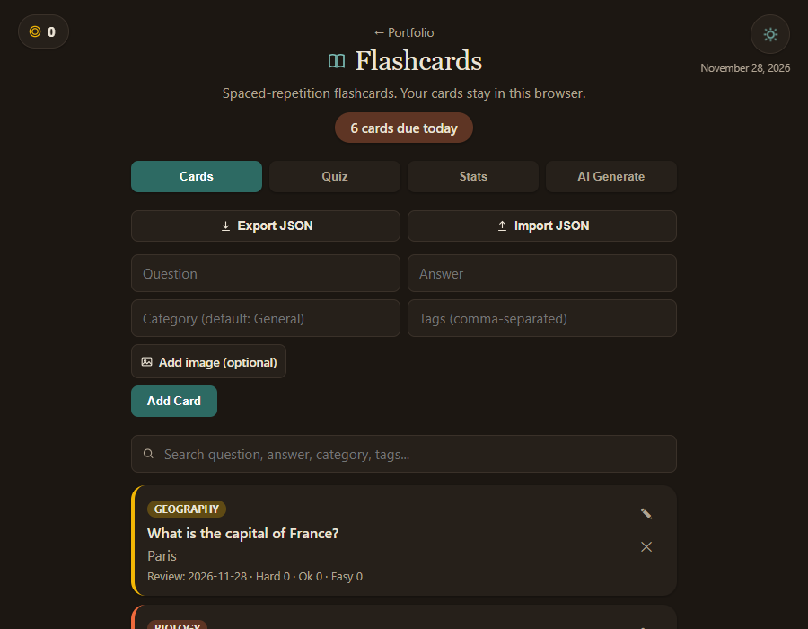
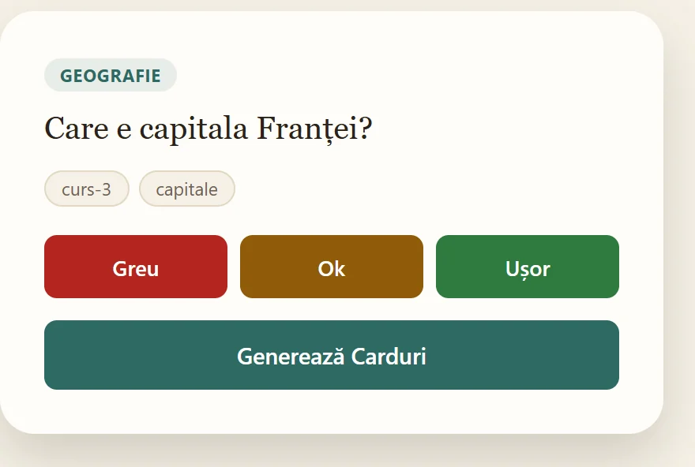

Flashcards
A flashcard app for students that shows each card again just before you'd forget it. You grade yourself Hard, Ok or Easy, and the app decides when the card comes back. It went through three design passes, and 34 unit tests found two bugs in it. Everything stays in your browser: no account. To try it, open the live demo and load the sample deck.


What it does
Cards with categories and search, two quiz modes, hints you buy with coins you earn, and stats. It can also draft cards from text you paste, using your own AI key.
My role
Product idea, UX, the rules for when a card comes back, and the testing below. The code was written with an AI assistant (Claude).
Proof
Colors checked against the WCAG AA contrast rule by calculation, in light and dark mode · 34 unit tests on every push · a hostile import file tested before and after a fix.
Status
Live · MIT · source on GitHub.
Design case study: three passes to a calm study tool
The interface has two jobs that pull against each other: be inviting enough to come back to every day, and stay quiet enough that the card is the only thing that matters.
Pass 1: remove the default look
The first version used indigo (#4f46e5), the color nearly every AI-generated interface starts with. A UI audit flagged it. I chose a look that feels like studying, not software: a warm paper background and one dark teal "ink" accent, with Georgia for headings and the system font for the rest.
The audit also found an accessibility bug: white text on the Ok and Easy buttons failed the WCAG AA contrast minimum, some of it under 2:1. One color was doing two jobs, text and button background. I split it into two sets of variables and checked every pair by calculation, not by eye.

Pass 2: "too monotone", so color gets a job
The single accent fixed the "AI look" but felt flat, with nothing to tell subjects apart at a glance. So color got a job: a 7-color "highlighter" palette, one color per category. Badges use soft tints with normal text on top; the vivid colors are decoration only, never behind text. I also tried a "student notebook" theme: ruled paper, washi tape, rotated sticky notes and a handwriting font.

Pass 3: keep the system, cut the costume
Before publishing, I asked for an audit from an employer's point of view. It was clear: the notebook theme read as a student demo, not a product. I kept what carried meaning (category colors, paper and ink, the type pairing) and removed what was only costume: the textures, the tape, the rotations and the handwriting font. I also rejected a "pulse, then next card" animation on the grade buttons: it would have put a timer into the step that decides when the card comes back.


Pass 3: today's app, the card list and the quiz.
Design iteration (November 2026)
A design review found three problems, all fixed: the first screen was an empty form, so it now offers a one-click sample deck; two inputs cut off their placeholders ("Category (default: G…"), so they now sit two per row; and the headings skipped a level.
How I tested it
The 34 unit tests check the app's logic: when a card comes back, the hints, imported decks and reading the AI's reply. GitHub runs them on every push. To check the tests themselves, I broke two scheduling rules in a copy of the code, and 3 tests failed.
Two bugs the tests found
- A crash after grading Easy about 15 times in a row. It can happen in "All cards" practice. The wait grew until the next date passed the largest date JavaScript can hold, and grading failed with "Invalid time value". The wait is now capped at 365 days.
- Hints that gave the whole answer away. A hint should never show the full answer, but one- and two-letter answers were fully visible in the level-2 hint. One letter now always stays hidden.
A deck file that could run code
You can import a deck from a file. An automated security review pointed out that text inside such a file could run as code in the page (an attack known as XSS). I tested it with a hostile deck: the old version ran all three injected pieces. The fix escapes quotes, accepts only real images and only dates that look like dates. The same deck now runs nothing and shows its text as plain text.
A reply that got cut off
For a long document, the AI's reply could hit its size limit before the card list was finished, because the model's thinking counts toward the limit. You saw only "could not parse the response". The limit is now higher and a cut-off reply says so.
How it's built
Plain HTML, CSS and JavaScript: no framework, no build step, no backend. Cards live in the browser's local storage. The optional AI feature calls the Anthropic API straight from your browser with a key you provide; the key stays on your device.
- Category colors aren't stored. Each color is worked out from the category's name, so two devices always show the same colors.
- The answer isn't in the page until you ask. "Show Answer" is what puts it there, so you can't peek by inspecting the page.
- No coin farming. In "All cards" practice a card earns coins only once a day, so you can't regrade one card in a loop for endless coins.
- AI cards are reviewed. Claude drafts question and answer pairs, but nothing joins the deck until you confirm each one.
What I haven't done yet
- No usability testing with other people. The design decisions came from my own use, audits and reviews. Next step: watch two or three students use it for a week.
- The unit tests cover the logic, not the screens. I checked the AI feature with the requests answered locally, so the real service wasn't called.
- Only the Back to top button follows the system "reduce motion" setting; the other animations (the tab fade, the answer reveal) still play.